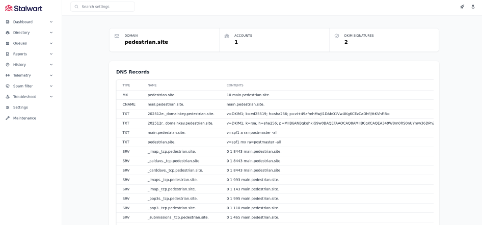

Running my own Mailserver
I've been running my own mailserver for quite a while, years actually, but buying a new domain along with a server at Hetzner, I needed to do a fresh install. And it's been a while since I did that.
The recent years, my go-to mailserver has been Stalwart -- it comes with basically
everything included. Okay, it would be nice if they'd supply Debian packages for a smooth and secure install.
I've never fancied these curl | bash install schemes; but I gave it a go; downloaded the shell script
and executed it. Et voilà - you fire up your browser and access the webui.
Configuring Stalwart for you domain is super simple, head straight to Directory -> Domains -- select 'Create domain' and enter the domain name. Then it'll actually show you a bunch of DNS records you may add in your DNS management console, see here:

This page alone removes a lot of complexity in setting up a proper mailserver. For Stalwart to be able to present this information it has already done quite a bit of tedious work for you; try googling 'dkim install guide' and see where that lands you. And yes, I do change bits here and there, the SPF record for one, but as a starting point it's really good; and no, none of this information is secret, you can look it up online yourself -- well, the parts that I did put out there :-)
My mailserver was flying within minutes -- then I spent several hours not being able to figure our why mails where unable to be sent or received... Then finally, I found this: Hetzner FAQ:
Why can I not send any mails from my server?
Unfortunately, email spammers and scammers like to use cloud hosting providers. And we at Hetzner naturally want to prevent this. That's why we block ports 25 and 465 by default on all cloud servers. This is a very common practice in the cloud hosting industry because it prevents abuse. We want to build trust with our new customers before we unblock these mail ports. Once you have been with us for a month and paid your first invoice, you can create a limit request to unblock these ports for a valid use case. In your request, you can tell us details about your use case. We make decisions on a case-by-case basis.
Aha, once I've been with Hetzner for a month, then they'll consider opening port 25 :-)
It all makes sense, running a mailserver is serious business and I will contact Hetzner in a moth. For now I'll take comfort in knowing that my nftables stills are okay :-)